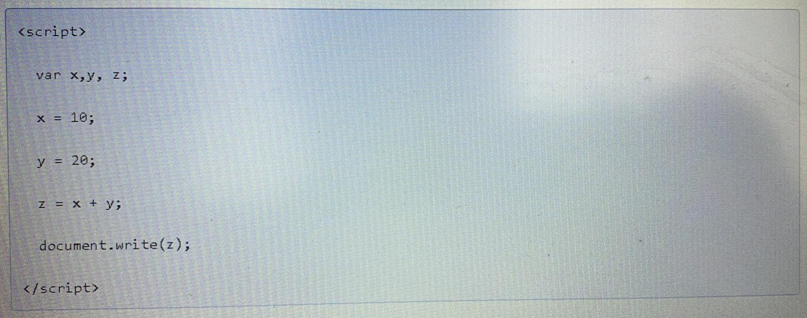

Javascript kodlama da kodlama yoğunluğu genelde fazladır. Kodlar genelde üstten alta doğru sıralanarak yazılır ve sunucu da tarayıcı da kodları bu şekilde sıraya dizerek yorumlar.
Yukarıda verilen örnekte x, y, değişkenleri tanımlanarak bu değişkenlere sayısal değerler atanarak z değişkeninde bu iki değer toplanmış ve ekrana “document write()” komutu ile yazdırılmıştır.
Javascript İle Kodları birbirinden ne ile ayırırız?
Tüm programlama dillerinde olduğu gibi kod bloklarının birbirleri ile çakışmasını önlemek için belirli ayraçlar kullanılır. Javascriptte de kod parçacığını bir diğerinden ayırmak ve hataya mahal vermemek için noktalı virgül kullanılır (;).
Yukarıdaki örnekte olduğu gibi, var ile x, y, z değişkenleri tanımlanmış ve buraya kadar olan kısmın ayrı yorumlanması için noktalı virgül ile bitirilmiş. Devamındaki değişkenler de değer aldıktan sonra noktalı virgül ile bitirilmişler ve document.write komutu da aynı şekilde işlevini tamamlayabilmek için noktalı virgül ile kapatılmış.
Javascriptte boşluk kullanımı
Javascript kodladığınızda bırakacağınız boşlukların bir önemi yoktur.
meslek = "manav kamil";
meslek = "manav kamil";
Java ile JavaScript oldukça fazla karıştırılmaktadır. Java, Sun firması tarafından Pascal ve Delphi dillerinden esinlenerek yazılmış bir programlama dilidir. Sonuçta işletim sistemlerinden bağımsız bir program elde edersiniz. Yani exe veya com uzantılı dosya oluşturur. Fakat JavaScript bu tür bir programlama dili değildir. Yorumlanması için bir tarayıcıya ihtiyaç duyar. Bu yüzden script dilidir. Html dosyasını içine gömülüdür. Sonuçta elinizde exe veya com uzantılı bir dosya yoktur. Javascript, Netscape firması tarafından C dilinden esinlenilerek yazılmıştır. Yazılma amacı Html’in sahip olmadığı bazı özelliklerin web sayfalarında kullanılmak istenmesidir. Ziyaretçi ile etkileşim gibi önemli unsurlarda Html’in eksiklerini tamamlayıcı unsurlara ihtiyaç duyulması sonucunda Netscape firması bu konuya ağırlık vererek JavaScript script dilini internet ortamına kazandırmıştır.
Netscape ve Internet Explorer tarayıcılarının JavaScript kodundaki anlayışları farklıdır. Nedeni ise, Netscape JavaScript dilini hazırladığında Microsoft‘un bu dilin özelliklerini veya yazılım tarzını tam anlamıyla Internet Explorer’a eklemeyip kendi yazım kurallarını belirlemesidir. Bu yüzden JavaScript kodu yazarken bu iki tarayıcı özelliklerini de göz önünde bulundurmalıyız.
Java Script’in Genel Bazı Özellikleri
o Javascript kodlarını yazmak için Windows kullanıcıları için NotePad, Mac. kullanıcıları için Simple Text yeterlidir.
o JavaScript kodları < script> etiketi ile başlar, etiketi ile biter.
o < script> etiketi, JavaScript’i anlamayan eski sürüm tarayıcıların bu kısmı geçmeleri içindir.